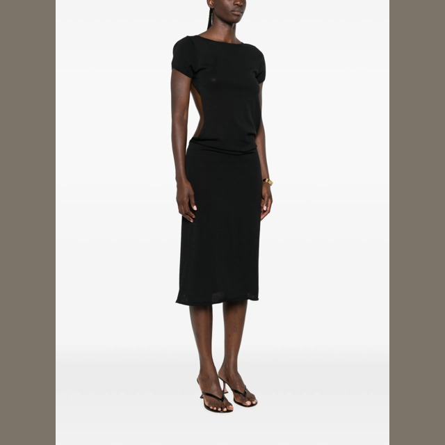
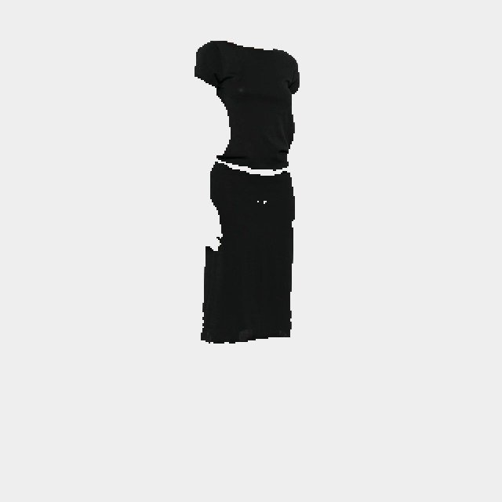
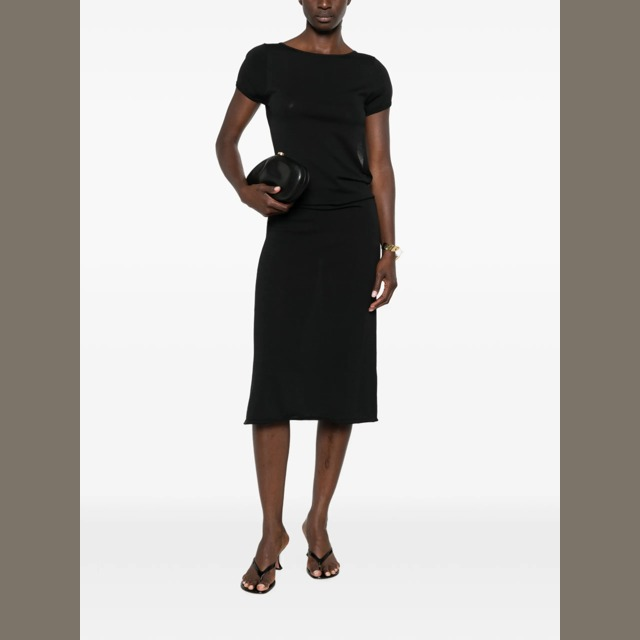
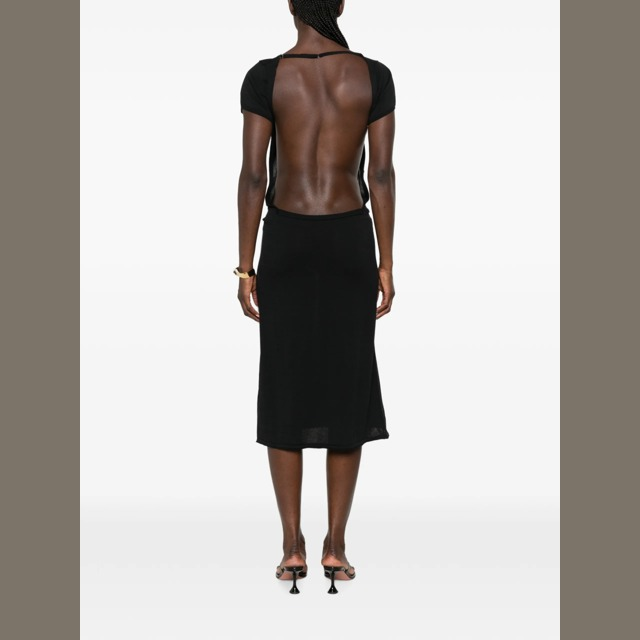
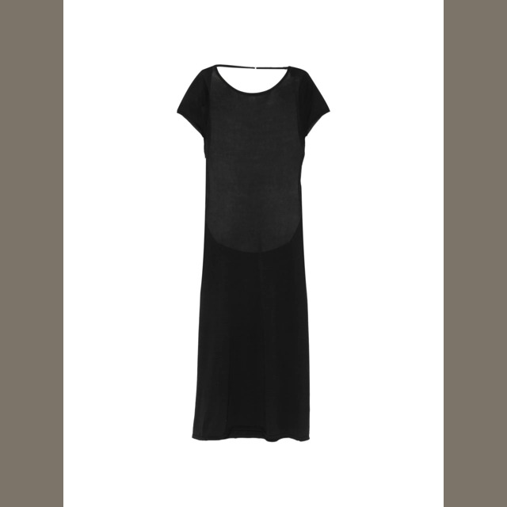
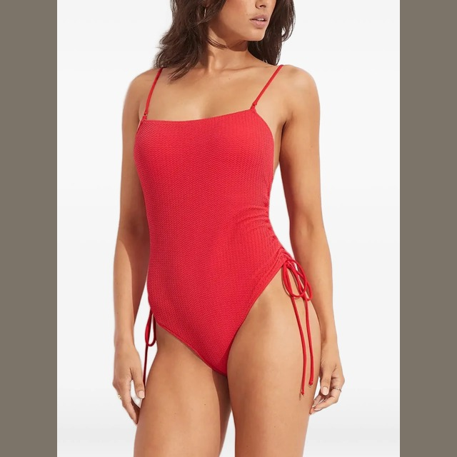
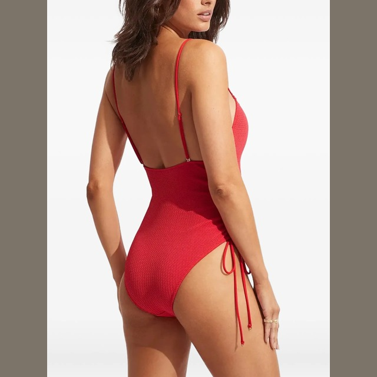
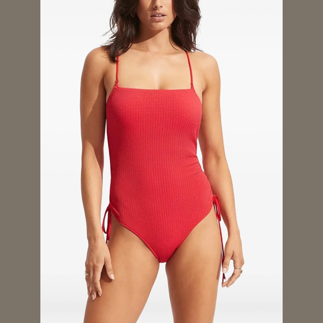
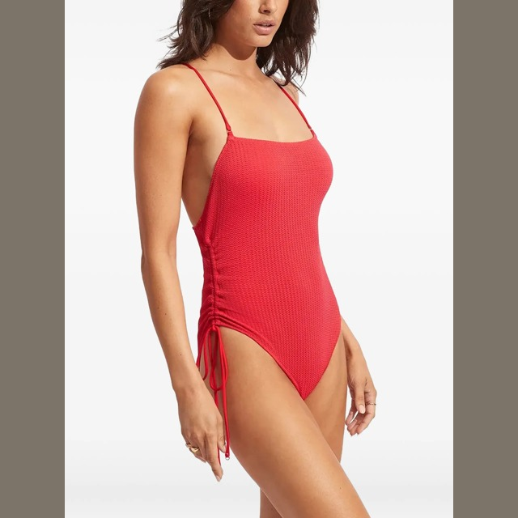
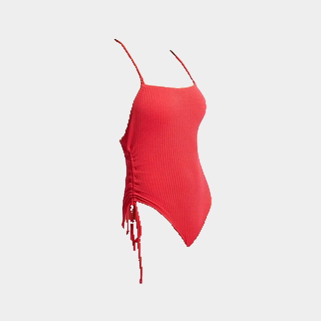

Garment veto examples
3 real SKUs · 11 overview photographs · 2 closeups ignored · 0 processing errors · 65 SKUs still pending
Originals above; results below. Closeup/detail photos are excluded from both matching and context. A garment must have visible support in every eligible overview. Red marks vetoed pixels; dimmed pixels lie outside the supplied SAM3 garment mask.
Jump to a garment
Frankies Bikinis x Jennie Rosalie midi dress
Full evidence and region details →4 overviews · 1 closeups ignored · 7/7 regions kept · 1 garment identities













Palm Angels Sunset Blvd Palm loose T-shirt
Full evidence and region details →3 overviews · 0 closeups ignored · 3/8 regions kept · 1 garment identities


Seafolly ruched drawstring swimsuit
Full evidence and region details →4 overviews · 1 closeups ignored · 5/5 regions kept · 1 garment identities












